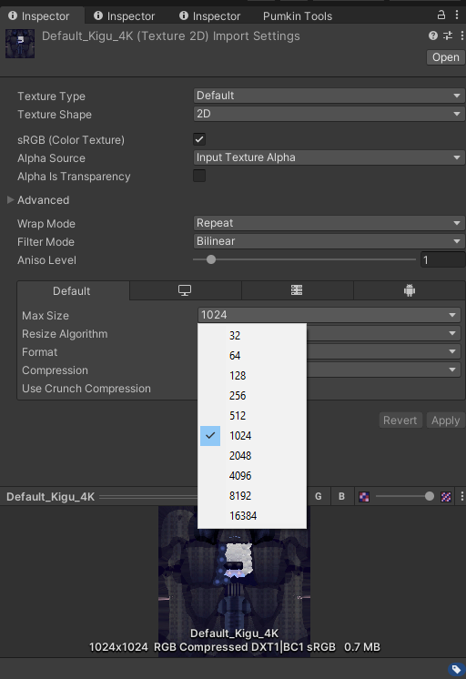

Avatar Texture Optimization
Written: 5/2/2024
So if you're reading this, you've probably been suggested to optimize your avatar's textures. Don't worry, from my opinion it's genuinely the easiest form of optimization to do in VRChat. It's reversible and is done by a single dropdown, seriously. If you can upload your own avatar you have all the skills you need to optimize your textures.
The Quickest Tutorial You've Ever Seen
In your avatar's unity project, browse to your textures and highlight them in the Project tab, this will open it's import settings in the Inspector tab. (You can bulk select textures if you'd like, just make sure you don't accidentally select a non-texture or else the inspector won't show anything.)
Find the Max Size dropdown and change it to something realistic and then click apply. That's the whole tutorial. I'm serious. Don't forget to reupload your avatar when you're done!

Example from the Meownyrn base from FrostKittyPaw.
This number is the maximum size the texture will be allowed to be exported at. You can work on this texture at any size you like and keep it's original source file at any size you like. The only number that really matters is this Max Size setting.
By default, Unity will set it to 2048, this can be overridden by an avatar creator or by you if you need it. Personally I recommend going through your textures and lowering to the point just above you notice there's a difference in texture.
If it's the texture of something tiny, like a ring, you might lower lower it to something like 256 or 128. Use your best judgement, if you decide you need more you can always go back and raise it later.
One more thing: do not use crunch compression. Why? Crunch compression uses a more aggressive and expensive compression algorithms to greatly reduce the exported file size. This exclusively saves file size and nothing else, in fact, the texture must the be decrunched on the receiving end before being loaded into VRAM at the same size it would have been without crunch compression. So you're not only not saving any VRAM, by using it you're increasing the resources it takes to load it in the first place.
Is it dangerous?
No! This is a nondestructive action, it can be reversed at any time, and doesn't touch the original file, only the copy of the original that gets exported and shows up in VRAM.
What happens if I crank it too high?
Unity won't scale up the texture beyond it's source resolution. So if you've set a 2k texture to be 8K, it won't magically make it higher resolution. Unity doesn't know how to add more detail, so it doesn't bother. But it will constrain it to the max resolution if the source file ever becomes a larger resolution.